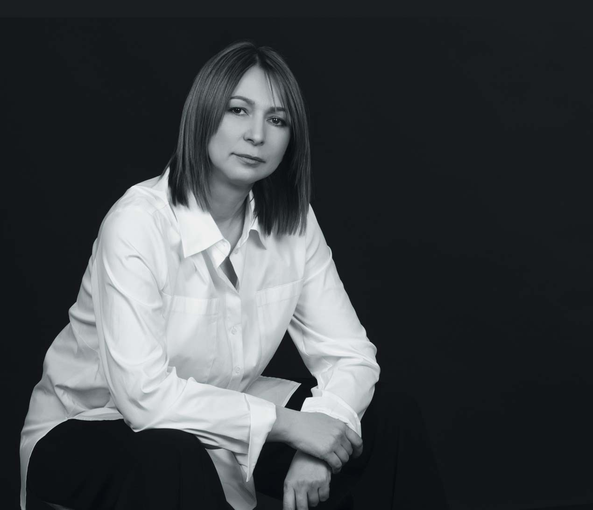
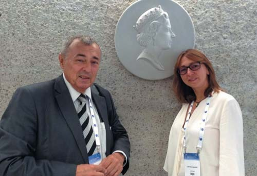
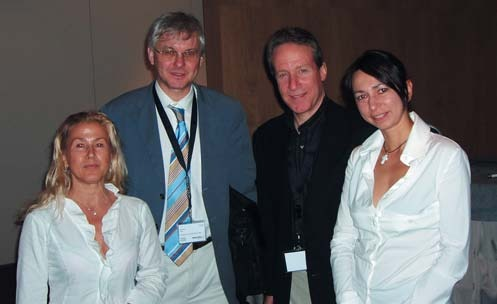
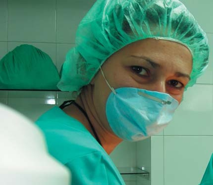
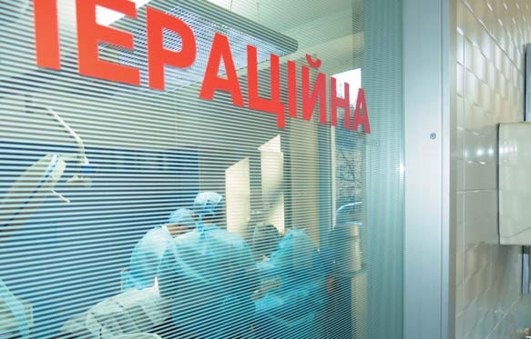
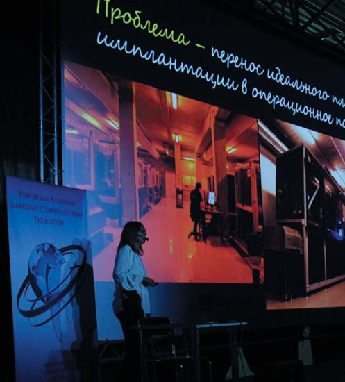
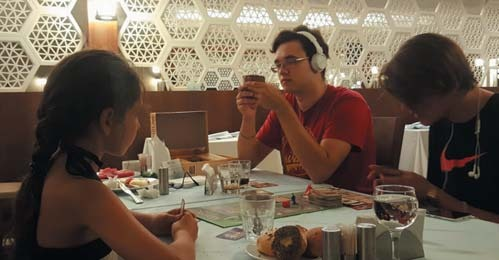
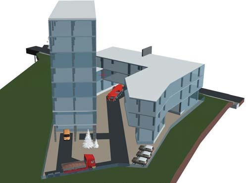

Вітальня «ДентАрту» · журнал «ДентАрт» 2016 №4
Доктор Лариса Дахно: «Мою філософію лікаря висловлює афоризм «Bene dignoscitur — bene curatur»»

«Важливо не те, що вони не бачать рішення, важливо те, що вони не бачать проблеми»
— Макс Перутц, засновник молекулярної біології
«Треба ставити реалістичну мету і розуміти свою місію»
— Добрий день, Ларисо Олександрівно! Ви зараз на конгресі у Вільнюсі. Що це був за конгрес, які Ваші враження?
— Це був курс-марафон, присвячений персоналізованій ортогнатичній хірургії, спрямованій на естетику. Три дні 70 учасників із 17 країн училися плануванню обличчя на основі даних комп'ютерної томографії, фотографії та цифрових моделей. Симонасу Грибаускасу вдалося зібрати зірок світової ортогнатичної хірургії: William Arnett (США), Octavio Cintra і Carlos Saiki (Бразилія), Javier Mareque (Іспанія)...
— Що нового, цікавого почули?
— Не можна сказати, що є щось революційно нове, оскільки ми давно застосовуємо і комп'ютерну томографію, і планування. Із Симонасом я знайома понад 10 років — завдяки компанії Materialise, яка, власне, і створювала програмний продукт для планування хірургії. Сьогодні концепція планування обличчя тісно пов'язана з естетичною стоматологією, з плануванням усмішки, а не тільки зі співвідношенням кісткових структур і м'яких тканин щелеп. Саме тому в команду для ведення пацієнтів включаються ортодонти, щелепно-лицьові хірурги і ортопеди. Модна програма DSD тісно поєднується з програмами для планування ортогнатичної хірургії. Здається, що це дуже проста і очевидна необхідність, однак технічно таке об'єднання при плануванні стало можливим лише тепер. Ми можемо констатувати, що протоколи лікування пацієнтів, які потребують ортогнатичного лікування, будуть розширюватися.
— Якщо повернутися до початку Вашого професійного шляху — чому Ви обрали стоматологію своєю професією?
— У моєму випадку не зовсім підходить слово «обрала». У школі я була відмінницею, переможцем математичних олімпіад, тому збиралася вступати на фізико-математичний факультет нашого Київського університету імені Т.Г. Шевченка. Але сталося так, що моя старша сестра, яка дуже хворіла в дитинстві (її історія хвороби досі є в навчальному посібнику для студентів), мріяла про педіатрію, про роботу в рідному Охматдиті, мріяла рятувати дітей. Два роки поспіль їй не вдавалося пройти за конкурсом у медінститут. Я ж була дуже норовливою дівчиною і подала, практично нишком, документи в медінститут, немовби змагаючись із сестрою — «а я зроблю». Тоді ми обидві вступили і вчилися паралельно, Світлана на педіатричному факультеті, а я — на стоматологічному. Це був не зовсім мій вибір, просто далася взнаки риса мого характеру.
— Так, бувають такі закономірні випадковості... Але, незважаючи на такий немовби спонтанний вибір, я бачу у Вас закоханість у стоматологію, а не тільки засіб заробляння на життя. Хто закохав Вас у стоматологію? Кого Ви вважаєте Учителем з великої літери в стоматології?
— Вважаю своїм учителем і голосно про це кажу — професора Владислава Олександровича Маланчука. Він закохав мене у хірургію, він мене закохав у процес пізнання, він підтримував у мені допитливість. Донині ми підтримуємо професійні стосунки, часто обговорюємо з ним складні клінічні випадки. Це людина, у яку я закохана як в Учителя і Хірурга з великої літери.

З професором Владиславом Олександровичем Маланчуком — Учителем і Хірургом.
— Ваша клініка, яка носить ім'я доктора Дахно, — дуже відома установа, багато колег посилають до Вас пацієнтів на діагностику і лікування. Цікаво, що Ви відкривали цю клініку незабаром після інтернатури! Що стало основою Вашого успіху? І що б Ви порадили тим молодим колегам, які хочуть швидше започаткувати свою справу?
— Я закінчила інститут у 1993 році, після інтернатури була розподілена на роботу, і відразу ж моя однокурсниця Наталя Павловська запропонувала мені приватну практику в Інституті ортопедії і травматології. Там був маленький кабінет, яким вона керувала, а я прийшла туди попрактикуватися хірургом. Прийшла і зрозуміла, що в поліклініці мене нічого не чекає, а майбутнє лежить у площині приватної стоматології. Відтак у моїй трудовій книжці з'явився запис «звільнена за статтею...» за прогули. Досі добре пам'ятаю, як головлікар кричав, що я більше ніде і ніколи не буду працювати, ніхто мене не візьме з таким записом...

З Fried Vancraen — власником компанії Materialise і Dr. Alan L Rosenfeld — членом медичної консультативної ради Materialise. Барселона, 2006 рік.
Пропрацювала я у Наталії близько двох років, і мені захотілося рухатися далі. А оскільки в трудовій книжці був запис про звільнення за статтею, ідея створення власної клініки народилася сама собою. Спасибі моїй родині і першому чоловікові — вони мене дуже підтримували і допомагали, однак потрібне ще й везіння зустрічати на своїй життєвій дорозі хороших людей. Мені завжди щастило з людьми.
Ще не менш важливо мати реалістичну мету і розуміти свою місію. Наприклад, є мета відкрити власну клініку. Але яку місію ви покладаєте на клініку? Щодо мене, то місія клініки доктора Дахно — здорові зуби для встановлення і підтримання високої якості життя кожної людини. Молодим фахівцям, які бачать себе на самостійному шляху, хочеться сказати: по-перше, це важка щоденна праця — розвивати свою справу, по-друге, швидких і легких грошей у медицині не буває. Це важкий шлях, але дуже захопливий. Якщо ти готовий думати і працювати багато кожен день, то все обов'язково вийде.
«Без правильного діагнозу всі технічні навички лікаря будуть витрачені марно»
— Ми знаємо, що Ви маєте досвід читання даних комп'ютерної томографії у 10 тисяч пацієнтів і планування операцій більш ніж у 4 тисяч пацієнтів. Що Вас, стоматолога-хірурга, спонукало перейти на діагностику, на рентгенологію?
— Нас завжди спонукають щось робити дві речі: люди та обставини. Говорячи про людей, я повертаюся до Владислава Олександровича Маланчука. Ми оперували травми і, звичайно, робили КТ з метою діагностики. Тоді це була спіральна томографія. Так я ще у 2001-2002 роках поринула у дані комп'ютерної томографії.
А потім, у 2003 році, випадково познайомилася з компанією Materialise, яка в Києві відкрила невеликий офіс, де працювали лише три співробітники (сьогодні понад 500 програмістів в Україні створюють програмний продукт для цієї компанії). Це була саме та обставина, що спонукала рухатися в напрямку вивчення даних КТ з метою планування дентальної імплантації та інтраопераційного використання хірургічних шаблонів. Компанія Materialise — розробник програми SimPlant, в розвиток якої я теж внесла свою лепту.
Уже у 2004 році на засіданні Клубу імплантологів України я прочитала свою першу доповідь «Планування імплантації на основі даних КТ. Використання хірургічних шаблонів». Помідорами мене не закидали, але була абсолютно негативна реакція. Добре пам'ятаю слайд презентації, який ілюстрував таку статистику: на підставі панорамної рентгенограми прийнято рішення про негайну імплантацію у 164 пацієнтів, а після проведення дослідження КТ змінили план у бік первинної аугментації або взагалі відмовилися від імплантації у 43% пацієнтів у зв'язку з недостатнім обсягом доступної кістки або особливостями прилеглої до сайту імплантації анатомії. Саме цей слайд викликав найбільше запитань. Навіщо, мовляв, така технологія потрібна, якщо вона у нас відбирає пацієнтів? Така реакція лікарів-імплантологів була дуже несподіваною для мене, тому я «сховалася в мушлю» і вирішила працювати і розвивати цей напрямок у власній клініці та популяризувати роботу з хірургічними шаблонами через статті у профільних журналах. Наступна моя доповідь на цю тему була через 8 років.
— Я гадаю, що вислів «Bene dignoscitur – bene curatur» (хто добре діагностує, той добре лікує) можна вважати девізом Вашої роботи. Правильно?
— Так, цей відомий афоризм абсолютно точно висловлює мою філософію як лікаря. Я вважаю, що в клінічному, рентгенологічному та лабораторному обстеженні пацієнта немає неважливих даних! Для правильного діагнозу може виявитися вирішальною будь-яка деталь з анамнезу, даних КТ, історії лікування, якщо раніше провадилося яке-небудь лікування, — усе має значення. Без правильного діагнозу і розуміння біологічних основ лікування всі технічні навички стоматологів будуть абсолютно марно витрачені на виконання складних маніпуляцій, які врешті-решт можуть призвести до неадекватного лікування.
Стовбурові клітини? Революція не за горами!
— Які дослідження Ви зараз ведете? Фейсбук пише, що Вас цікавлять стовбурові клітини. Це загальномедична проблема, але в стоматології що вона може змінити революційно?
— Я вважаю, що революція відбудеться, і це не така вже й далека перспектива. Однак, щоб адекватно оцінити теперішній стан справ, треба визнати, що наше розуміння механізмів кодування і передачі спадкової інформації дуже обмежене і неповне. Ми не знаємо всіх механізмів передачі та коригування помилок у коді, що виникають, а також нам досі не відома перешкодовідновлювальна здатність усієї системи організму в цілому. Таким чином, для практичного застосування стовбурових клітин слід більшою мірою спиратися на статистичні дані (нас чекає тривалий період проб і помилок). Наукові дослідження потрібно чітко відокремити від практичної медицини і ставитися до їх результатів більш ніж обережно доти, доки теоретична основа не почне спиратися на математичні формули і не набуде прогностичної сили. У зв'язку з цим дослідження in vitro не можуть вважатися достовірними у повному обсязі. Уже сьогодні слід вести дослідження на живих організмах — або на людях, або на мавпах, але мавпи доступні для досліджень тільки в Китаї.
Що ж до стоматології, то основні дослідження ведуться у напрямку роботи зі стовбуровими клітинами з фолікулів третіх молярів. Провадять експерименти з фолікулярними клітинами різних рівнів диференціації. Оскільки зуб складається із найбільш високодиференційованих клітин (емаль, дентин, цемент), виростити повністю функціональний зуб залишається надскладним завданням.
Дослідження нині спрямовані на те, як у надрукованому з гідроксиапатиту каркасі зуба виростити зі стовбурових клітин у правильному напрямку судинно-нервовий пучок, вплести його в основне русло і домогтися формування клітин цементу на гідроксиапатитному каркасі, а також періодонтальної зв'язки. Відкритим питанням залишається анеуплоїдія і реакція як соматичних клітин, так і стовбурових на анеуплоїдію. Таким чином, титанові імплантати, напевно, відходитимуть у минуле. Але для цього слід зберігати власні стовбурові клітини. Більше того, вони повинні зберігатися з міжклітинним матриксом, оскільки саме міжклітинний матрикс відповідає за просторову орієнтацію клітини, що ділиться. Роль екстраклітинних везикул у міжклітинній взаємодії та напрямку поділу клітин — це зовсім свіже відкриття, але це окрема велика тема для розмови.
«Чек-лист допомагає нічого не випустити з поля зору»
— Ви дійсний член Європейської академії черепно-щелепно-лицьової радіології, стажувалися в Нідерландах. Чи все із зарубіжного досвіду, на Ваш погляд, можна застосувати у нашій стоматології?
— Я вважаю, немає нашої стоматології та зарубіжної. Існує єдина біологія, анатомія, фізіологія людини і... стоматологія. Хоча слід визнати, що ми є спадкоємцями радянської школи медицини, яка справді дуже відрізнялася від європейської й американської. Це, на мій погляд, основна причина, через яку необхідно підтверджувати диплом про освіту в інших країнах. Що слід перейняти із зарубіжного досвіду? Мені складно відповісти на це запитання коротко, оскільки освіта і лікарські протоколи побудовані за іншими алгоритмами.


Будні доктора Лариси Дахно.
Що мені дуже сподобалося в освіті, так це мнемонічні прийоми запам'ятовування. Наприклад, для запам'ятовування кісток мозкового черепа потрібно запам'ятати STEP OF 6, що розшифровується як S — sphenoid, T — temporal, E — ethmoid, P — parietal, O — occipital, F — frontal, 6 — кількість кісток мозкового черепа. А для запам'ятовування злоякісних пухлин, які супроводжуються метастазами, що обвапновуються, слід пам'ятати слово BOTOM: B — breast cancer, O — osteosarcoma, T — papillary thyroid cancer, O — ovarian cancer, M — mucinous adenocarcinoma.

Docendo discimus!
Що ж до практичної медицини, радіологи, бачачи на зображенні якийсь патологічний осередок, зобов'язані методом виключення поставити рентгенологічний діагноз. Немає попереднього діагнозу та його підтвердження, як вчать наших лікарів. Є перелік нозологічних одиниць, які можуть відповідати такій картинці, і завдання лікаря саме методом логічного виключення (вік пацієнта, симетрія ураження, тип росту, реакція оточуючих тканин і багато іншого) викристалізувати єдино правильний діагноз. На мій погляд, це правильний алгоритм, оскільки в остаточному підсумку веде до точнішої діагностики.
У щелепно-лицьовій зоні є 300 нозологічних одиниць, які не зустрічаються в жодній іншій ділянці людського організму. Можу припустити, що небагато знайдеться лікарів, які зможуть озвучити всі 300 нозологій. А коли є чек-лист, де вони постійно прописані, — це дуже допомагає нічого не упустити з поля зору. Я вважаю, це дуже важливо.
«І емаль посиплеться, немов яєчна шкаралупа»
— У Вашу клініку, напевно, теж звертаються пацієнти, які хочуть мати «журнальні зуби». Що Ви можете сказати своїм колегам і пацієнтам з приводу хімічного відбілювання?
— Хімічне відбілювання ми не робимо за жодних обставин, навіть якщо пацієнт наполягає і готовий підписати згоду на те, що у нього завтра посиплеться емаль, немов яєчна шкаралупа, або виникне гіперчутливість. А колегам завжди кажу одне й те саме: треба вчити матчастину. Інтенсивність забарвлення зубів визначається кількістю парних сполук вуглецю. Хімія процесу відбілювання така: перекис водню (у сучасних системах використовують перекис карбаміду або перекис сечовини) — дуже нестабільне з'єднання і розкладається на воду та атомарний кисень. В основі відбілювання лежать окислювальні процеси впливу атомарного кисню на складні молекули вуглецю великих розмірів, у результаті окислення руйнуються бівалентні зв'язки і утворюються одинарні сполуки вуглецю, які адсорбують менше світла, що і забезпечує зменшення пігментації. Далі заглиблюватися не буду, оскільки вплив кислоти на емаль добре вивчено. Основний наслідок — демінералізація емалі.
Ще хочу нагадати любителям відбілювання, що зараз почастішали випадки цервікальної інвазивної резорбції. Ми пам'ятаємо, що емаль переходить у цемент трьома способами: або емаль заходить у цемент на кілька клітин, або цемент заходить в емаль, або є зазор між емаллю і цементом, де «оголений» дентин. Коли дентин зустрічається з відбілюванням, ризик розвитку цервікальної резорбції збільшується в рази. З цим боротися практично неможливо. Хочеться ще раз підкреслити важливість глибоких фундаментальних знань.
«Ми хочемо жити і працювати у незалежній і цілісній Україні»
— Ви допомагали технікою госпіталям, лікуєте поранених у зоні АТО. Що Вас спонукає до цього?
— Я справді допомагала і допомагаю технікою, і не тільки. Ми працюємо з реконструктивними хірургами, нейрохірургами, моделюємо пластини для закриття краніодефектів, багато робимо для допомоги нашим пораненим. Думаю, що держава — це не абстрактне поняття, держава — це кожен з нас. Оскільки ми не збираємося нікуди їхати, ми хочемо жити і працювати в нашій країні, я прийняла для себе рішення, що мій громадянський обов'язок — робити все можливе для збереження цілісності і незалежності України. Це моя громадянська позиція.
— Звідки Ви для такої напруженої роботи, яка вималювалася в нашому інтерв'ю, черпаєте енергію, у чому знаходите відраду, як знімаєте стрес? Ваші розваги, натхнення, хобі?
— Передусім мене підтримує моя сім'я. Мені дуже пощастило з людьми, які мене оточують. Моя сестра — дуже близька для мене людина, вона, як і мріяла, працює в Охматдиті, у важкому відділенні метаболічної патології, де лікують дітей від 0 до 3-х років. Ми з нею дуже багато спілкуємося, обговорюємо різні клінічні ситуації — це моя опора в медичній частині. І, звичайно, мене підтримує мій чоловік! Мені дуже пощастило жити з розумним чоловіком. Сашко вміє не просто думати, а має здатність знаходити рішення різних життєвих завдань, бачити і передбачати наслідки різних дій.
Відпочиваю я з дітьми, їх у нас четверо. Я їх обожнюю, вони моє натхнення, а я для них приклад. Ми практично не дивимося телевізор, але дуже багато читаємо, у нас удома величезна бібліотека. Усі наші діти з різними інтересами, і нам не нудно разом. Максу буде 24 роки, Данилові 19 років, Андрієві 17, Катрусі 9 років. Вони дуже дружні. Так, я сміливо можу сказати, що саме сім'я мене найбільше надихає.

Діти для мами — натхнення, а мама для них — приклад.
— За правилами бізнесу кожні 7 років потрібно робити щось нове, оскільки те, що ми робимо, до сьомого року починає перетворюватися на рутину, і далі неминуче настає кінець. Потрібно постійно шукати щось нове, щоб підніматися по сходинках вище і вище. І ось на Вашій сторінці у Фейсбуці з'явилося фото сучасної будівлі на вул. Зоологічній. Ви не побоялися про це публічно заявити. Що це за будівля?
— Я довго думала, робити цей проект відомим чи приховувати до відкриття. Але у мене по життю завжди виходить так, що вербальне стає матеріальним. Тому я вирішила розповісти про початок будівництва нової клініки. «Клініка голови і шиї» (робоча назва) запланована як мультидисциплінарна клініка, де будуть працювати отоларингологи, стоматологи, щелепно-лицьові і пластичні хірурги. Уже сьогодні ми працюємо командою лікарів у такому складі, що й дало мені сили подумати про можливості реалізації великого проекту. У плані дитяче і доросле відділення, невеликий готель для приїжджих пацієнтів і родичів маленьких пацієнтів, аудиторія для навчання. Найбільша моя мрія — це кваліфіковане лікування та реабілітація дітей з вродженими патологіями. Ще раз повторюся, що люди, з якими я нині працюю, саме наша команда дає мені впевненість у тому, що ми все зможемо. Сьогодні це моя найбільша мрія.

Такою буде нова клініка.
— Чудово! Ви забезпечені на наступний цикл усім новим, щоб рухатися вперед. Я хочу побажати Вам від імені нашого журналу успіху на цьому шляху, щоб усі Ваші мрії здійснились.
— Щиро дякую! Підтримка колег — це шалене підживлення, це дає впевненість, що ми разом як професійна спільнота зможемо зробити щось у цій країні на іншому рівні, не чекати, що держава щось подарує (адже держава — це і є ми), а щоденно напружено працювати.
— Що б Ви побажали стоматологам — читачам «ДентАрта»?
— Мені хочеться побажати цікавого професійного життя. Весь час дивитися вперед. Думати про те, що медичні знання не є константою, це та річ, яка прогресує і змінюється дуже швидко. Наша професія вимагає постійного навчання. Бажаю всім професійного задоволення і насолоди від того, що ми робимо кожен день!